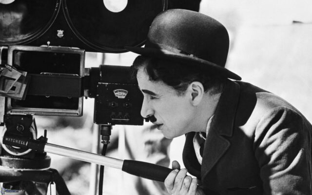

blog da marina
Meu primeiro post
Por: Marina
Boas vindas ao meu blog!! eu sou a Marina e aqui vou compartilhar dicas, conhecimentos e curiosidades sobre cinema, um assunto que gosto muito.
Esses são meus filmes favoritosss que se você ainda não assistiu, va correndo: Brokeback Mountain, Diário de uma Paixão, Whiplash, Clube da Luta e Ponyo (amo Studio Ghibli do fundo do meu coração)
A história do cinema
Você ja se perguntou como o cinema surgiu? Bom, esse é o assunto que vamos aprender hoje.
Tudo começou em dezembro de 1895, quando os irmãos Auguste Lumière e Louis Lumière realizaram, em Paris, a primeira exibição pública e paga de filmes usando o cinematógrafo.
Esse evento é considerado o nascimento oficial do cinema.
No início, os filmes eram curtos e mudos, mostrando apenas cenas do cotidiano.
Poucos anos depois, durante o século XIX, George Méliès revolucionou o cinema ao criar histórias de ficção e usar efeitos especiais. Em 1927, o lançamento de The Jazz Singer marcou o início do cinema sonoro.
Nas décadas de 30 e 40, surgiram os filmes coloridos, que se popularizaram principalmente por tecnologias como a Technicolor. Com o tempo, surgiram os efeitos visuais, streamings, etc.
Hoje o cinema se tornou muito popular, reunindo arte, entretenimento e tecnologia.

Cinema independente vs Hollywood
No post de hoje nos vamos falar sobre algumas diferenças entre o cinema independente e a grande indústria de Hollywood!!
Os dois representam formas diferentes de produzir filmes. Enquanto Hollywood, que é o centro da produção cinematográfica dos Estados Unidos, faz grandes produções com muito investimento financeiro, grandes estrelas, efeitos especiais elaborados e uma grande divulgação, o cinema independente costuma ter equipes menores, menos investimento e mais liberdade criativa, abordando muito mais temas não comerciais que não são pensados em gerar lucro.
Para podermos entender melhor isso, aqui vão alguns exemplos de filmes!!
Hollywood: Vingadores (2019); Avatar (2009); Homem Aranha (2002); O Senhor dos Anéis (2001)
Cinema idependente: Whiplash (2014); Juno (2007); Pequena Miss Sunshine (2006); Lady Bird (2017)
Por que apoiar produções independentes? Apoiar o cinema e cineastas independentes é muito importante pois eles tem menos recursos e visibilidade do que grandes estúdios. Além disso, dá muito mais abertura para ideias, histórias e abordagens diferentes do que as grandes produções de Hollywood, dá espaço a roteiristas, diretores e atores que podem estar começando e não ficamos limitados a apenas os filmes comerciais de grandes franquias.
Por que o cinema é importante?
O cinema é uma das formas de arte mais populares do mundo. Ele está presente na vida de muitas pessoas e consegue unir histórias, imagens, música e emoções. Mas o cinema não serve apenas para divertir: ele também pode ensinar, informar e fazer as pessoas refletirem.
Por meio dos filmes, podemos conhecer diferentes culturas, lugares e épocas. Uma pessoa pode aprender sobre acontecimentos históricos ou conhecer uma realidade completamente diferente da sua através de uma história contada na tela.
O cinema também aborda assuntos importantes da sociedade. Muitos filmes falam sobre preconceito, desigualdade, amizade, família, política e outros problemas que fazem parte do nosso cotidiano. Dessa forma, eles podem incentivar o público a pensar e a questionar o mundo ao seu redor.
Além disso, o cinema é uma maneira de preservar a cultura e a história. Os filmes registram costumes, pensamentos e acontecimentos de diferentes períodos, permitindo que as próximas gerações conheçam um pouco de como era a sociedade no passado.
Por tudo isso, o cinema é muito mais do que entretenimento. Ele é uma forma de arte capaz de emocionar, ensinar, transmitir ideias e mostrar diferentes perspectivas. Por isso, continua sendo tão importante para a sociedade e para a cultura.